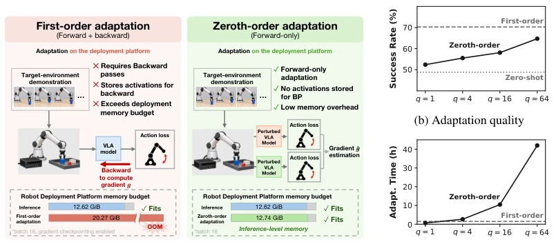
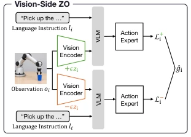

This paper injects a strong shot of adrenaline into the "zero-order optimization" (ZO) of VLA models, but more accurately, it issues a VIP card to those "impoverished" robots that cannot run ZO at the deployment end. The authors keenly point out that although ZO saves memory, it calculates as slowly as running in a mud pit, especially when facing massive VLA models, where naive ZO optimization is simply a waste of life. The cleverness of VLA-ZO lies in its "stinginess": it freezes the expensive vision-language part into a popsicle, allowing only the action head to "suffer", and employs a "prefetch" mechanism to hide IO latency within computation. The results are indeed impressive, with speed improved by 30 times and success rate increased by 10 points. However, this approach is essentially cobbled together relying on "caching" and "computing savings", with limited modifications to the model architecture, representing a typical case of "tightening the screws tighter within the existing framework". Although practical, it still falls short of a "paradigm shift".
研究动机Motivation
VLA模型在真实部署中面临严峻的分布偏移问题，比如相机视角变化或光照改变，导致策略成功率从95%暴跌至30%以下（Fei et al., 2025）。为了解决这个问题，研究者提出了单样本适应（one-shot adaptation）方法，如FTM、FLA和DART（Li et al., 2026; Kang et al., 2026）。然而，传统的基于梯度的“一阶优化”（First-order）方法需要反向传播，会占用大量显存存储中间激活值，远超部署平台的推理预算（Cai et al., 2020; Yang et al., 2023）。虽然零阶优化（ZO）通过仅前向传播避免了反向传播，理论上符合内存限制，但为了估计梯度需要大量扰动查询（perturbation queries），导致计算时间极长，对于包含昂贵视觉和语言组件的VLA模型， naive的ZO优化往往需要数小时，完全不具备实用性。因此，如何在保持ZO低内存优势的同时，大幅提升其计算速度，成为制约VLA在资源受限设备上自适应的关键瓶颈。
VLA models face severe distribution shift problems in real-world deployment, such as camera viewpoint changes or lighting alterations, causing strategy success rates to plummet from 95% to below 30% (Fei et al., 2025). To solve this problem, researchers have proposed one-shot adaptation methods, such as FTM, FLA, and DART (Li et al., 2026; Kang et al., 2026). However, traditional gradient-based "first-order optimization" (First-order) methods require backpropagation, which consumes significant GPU memory to store intermediate activation values, far exceeding the inference budget of deployment platforms (Cai et al., 2020; Yang et al., 2023). Although zero-order optimization (ZO) avoids backpropagation by only performing forward propagation, theoretically complying with memory constraints, estimating gradients requires a large number of perturbation queries, resulting in extremely long computation times. For VLA models containing expensive vision and language components, naive ZO optimization often takes hours, completely lacking practicality. Therefore, how to significantly improve its computation speed while maintaining ZO's low memory advantage has become a key bottleneck restricting VLA adaptation on resource-constrained devices.

Figure 1: Zeroth-order adaptation enables on-robot adaptation within the inference memory budget. Unlike first-order adaptation, it requires only forward evaluations and avoids storing activa- tions (a). Increasing the query budget q improves adaptation quality toward first-order performance, at the cost of increased adaptation time (b,c).
The core idea of VLA-ZO is to utilize the decoupled structure of the VLA model's "Vision-Language Prefix" and "Action Expert", eliminating redundant computation by freezing the prefix and optimizing only the action-side parameters. The overall process is divided into three optimization stages: First, perform state reuse within update steps (Within-Step). Since the prefix parameters are frozen, for the same observation and instruction, regardless of how many perturbation queries are performed, the conditioning state output by the prefix remains the same. VLA-ZO calculates the prefix state only once and caches it, allowing all 2q perturbation queries within that step to reuse it, avoiding repeated prefix calculations. Second, perform state reuse across update steps (Across-Step). In one-shot adaptation, data from all batches come from the same demonstration trajectory, and the prefix state is fixed. VLA-ZO persistently stores computed states (e.g., on disk), subsequent steps directly load the cache instead of recalculating, reducing prefix calculation counts from 2qBT times to N times (N is the number of demonstration samples). Finally, introduce Schedule-Aware Prefetch. To mask the IO latency of loading cached states from disk, VLA-ZO uses a deterministic sampler to predict the index of the next batch, asynchronously prefetching the state of the next batch in the background, enabling it to execute in parallel with the action expert computation of the current batch. Through this combination of "frozen prefix + within-step reuse + across-step reuse + IO hiding", VLA-ZO compresses adaptation time by 25-32 times while maintaining ZO's memory advantage.

Figure 2a compares two LoRA placements for π0.5. The vision-side placement targets the feed-forward projec- tions of every block of the vision encoder inside fϕ, following the placement used by Li et al. (2026). The action-side placement targets the query and value projec- tions of every self-attention block of the action expert gψ. At the same rank r = 16, the action-side adapter con- tains 1.25M trainable parameters, compared with 4.71M for the vision-side adapter. Both configurations keep the pretrained model weights frozen and optimize only their LoRA parameters with ZO using the objective in Eq. (2).
The paper evaluates π0.5 and OpenVLA-OFT models on the LIBERO benchmark (containing 40 tasks such as Spatial, Object, Goal, etc.). The experiment set three camera viewpoint offsets (small, medium, large) and composite visual interference (blur, lighting changes). Baselines include unadapted policy, FLA, DART, and the ZO-SGD implemented by the authors. Results show that at q=16, VLA-ZO increased π0.5's average success rate from 48.27% to 58.17%, reducing adaptation time from 38487 seconds to 1504 seconds (25.59 times acceleration); at q=64, success rate further increased to 63.58%, with acceleration ratio reaching 32.54 times. Ablation studies indicate that within-step reuse contributed the largest acceleration ratio, while across-step reuse and prefetch further optimized performance. On OpenVLA-OFT, this method is also effective, proving the universality of the action-side adaptation strategy. Although the improvement is limited under extreme viewpoints, overall it proves the feasibility of ZO optimization on resource-constrained platforms.